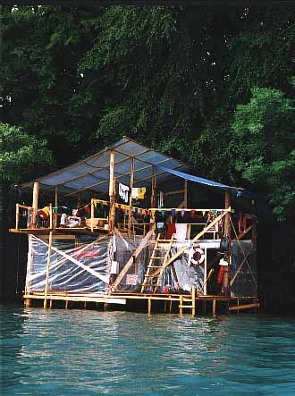
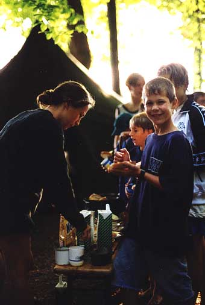
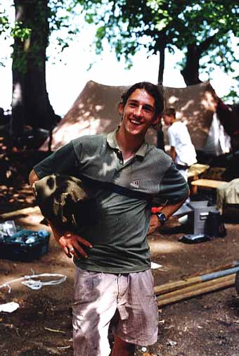
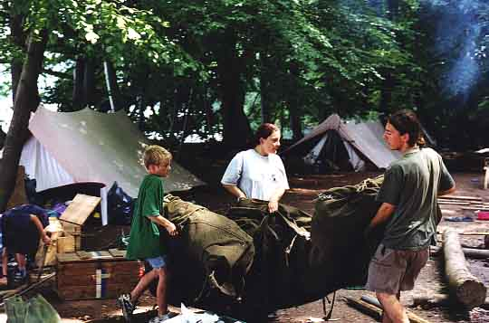
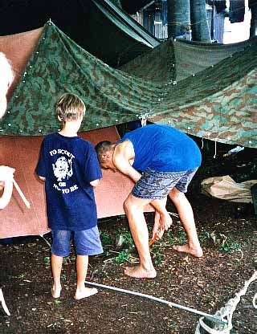

Bericht der Raiderequipe Dura-bi-rot
Gemeinsam mit der zweiten Stufe und der Roverrotte Jeeminee teilnehmte wir als die an Pfingsten neugegründete Raiderequipe Dura-bi-rot mit ganzen fünf Mitgliedern am alljährlichen Sommerlager teil.

In leuchtend rote Uniformen steckend fuhren wir mit dem Zug auf den Brünig, sattelten dort unsere Velos und fuhren mit Mach 3 den Berg hinunter und weiter nach Brienz. Dort fiel Zottli in den See. Mit Schweissausbrüchen fuhren wir weiter über Interlaken und Spiez nach Einigen, wo wir die Pfaderinnen und Pfader trafen, die schon grosse Teile des Lagers aufgebaut hatten. Tatendrangbesessen packten wir an, und schon bald war das Lager perfekt und luxuriös ausgestattet. Einzig fehlte noch eine Schlafgelegenheit für uns und die Jeeminees.
Wir kauften einige Tonnen Holz und bauten einen unglaublichen zweistöckigen Turm mitten im eiskalten Wasser des Thunersees. Auf unserem Schloss schliefen im unteren Stock fünfzehn Personen, und im gemütlichen oberen Stock befand sich unsere Stube mit einer friedlichen Feuerstelle. Nach einigen Tagen unermüdlichen Einsatzes hatten wir unseren Traum verwirklicht. Als nächstes begaben wir uns fast ohne Ausrüstung in den Wald, um ein bisschen Survival zu betreieben. Aus Mehlsäcken bastelten wir Schlafsäcke, in denen man vor lauter Hitze kaum schlafen konnte, am Feuer zubereiteten wir Fische und Pilze, welche wir im Migros gejagt hatten.

Da wir damit nicht viel billiger springen konnten, setzten wir uns einfach in eine Beiz. Und plötzlich war soweit, der Bus wartete auf uns und fuhr mit lauter Musik (Highway to hell) zur Seilbahn, welche wir ohne Furcht bestiegen. Zitternd und käseweiss stürzten wir uns todesmutig knapp hundert Meter in die Tiefe. Dieses Spektakel überlebt, machten wir uns auf den Weg zurück zum Lagerplatz, wo wir anfingen, alles abzureissen. Besonders der Turm erwies sich vorerst als etwas wiederspenstig, und als er schliesslich zu Staub zerfiel riss er Dutzende von Helfern mit in die kalten Fluten. Und schliesslich war aufgeräumt und wir fuhren wehmütig nach hause...